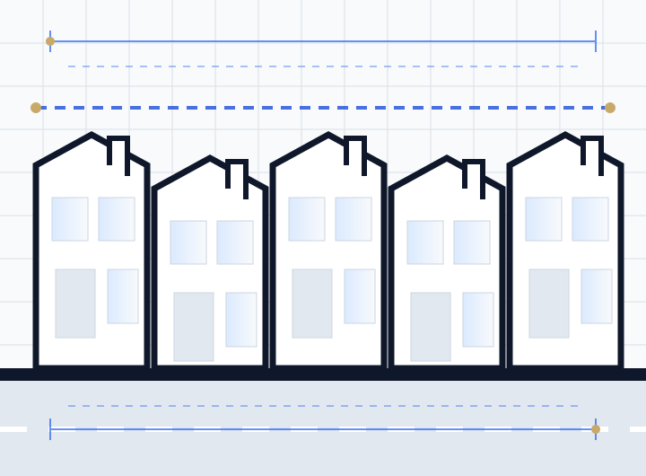

Sheffield City Council
The council's local plan and householder design guidance govern extension scale, materials and amenity space.
Extensions, loft conversions and conversion schemes across Sheffield — drawn for a hilly city of stone-built terraces with a green belt boundary running unusually close to its suburbs.

Sheffield's geography does more to shape its residential projects than its planning policy does. The city is built across a series of steep valleys, which means level changes across a single plot are the norm, and a third of the local authority area sits inside the Peak District National Park.
That combination produces two distinct kinds of constraint: the practical difficulty of building on a slope, and the policy difficulty of building anywhere near the green belt and National Park boundary, where development control is considerably tighter.
Stone-built terraces and semis across areas like Walkley, Crookes and Nether Edge define much of the inner suburb stock. Matching stone on an extension is a real material question in Sheffield in a way it is not in brick-built cities, and officers will look at coursing and finish where the property sits in a conservation area.
Sloping plots mean rear extensions frequently need retaining walls, stepped foundations and split-level floors. Accurate level information is essential and cannot be assumed from a plan view.
Green belt and National Park edges. Suburbs to the west run right up against the Peak District boundary. Extensions in green belt are assessed against whether they are disproportionate to the original dwelling, which is a materially different test from the usual householder assessment.
HMO conversions cluster around the two universities. Sheffield has used Article 4 directions to manage HMO concentration in parts of the city, so the planning route should be confirmed for each address.
The constraints we check before starting design work on any project in South Yorkshire.
The council's local plan and householder design guidance govern extension scale, materials and amenity space.
Part of the local authority area falls within the National Park, which is a separate planning authority with considerably tighter control.
Extensions in green belt are tested against whether they are disproportionate to the original dwelling, a stricter standard than normal householder policy.
Level surveys, retaining structures and stepped foundations are routine requirements rather than exceptions.
Matching natural stone and coursing is an active design consideration, particularly in conservation areas.
Directions restricting small HMO conversion apply in parts of the city near the universities. We confirm the current position for your address.
We deliver projects across Sheffield and South Yorkshire remotely, working from measured information, existing drawings and photographic surveys. Where a full measured survey is required we will tell you at the outset and agree it before starting.
Check your postcode →Local answers for property owners and developers in Sheffield.
Often yes, but the test is stricter. Extensions in green belt are assessed against whether they are disproportionate to the original dwelling as it stood in 1948 or when first built. That means the cumulative effect of previous extensions counts, and the acceptable increase is limited. We assess the position before designing.
Usually, yes. Sloping sites often need retaining structures, deeper or stepped foundations and more complex drainage. The drawings need accurate level information to reflect that — designing on assumed levels is the most reliable way to generate expensive variations on site.
In conservation areas and on prominent elevations, officers will normally expect materials to match or closely complement the existing stone, including coursing and finish. Outside those areas there is more latitude, and a deliberately contrasting contemporary material is sometimes supported. We advise on the approach likely to be acceptable.
Some western parts of Sheffield fall within the National Park boundary, which is a separate planning authority applying tighter policies. It makes a substantial difference to what is achievable, so it is one of the first things we check.
Yes. We prepare drawings for projects in Rotherham, Barnsley and Doncaster in addition to Sheffield City Council, checking each authority's own local plan for the site.
Share your address, project type, existing drawings and preferred timing. We will review the information and explain the most suitable next step.
We work remotely with clients nationwide. Pick your area for local planning guidance.